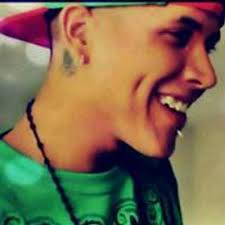

JOSE LUIS MALDONADO RAMOS
Pie de página
¿QUIEN ES?
Jose Luis tambien conocido como Ckan nacio el 26 de julio de 1987 en Guadalajara, a la edad de 12 años quedo huerfano de padre lo que proboco que se uniera a pandillas de los alrrededores de donde vivia, cuando el tenia 17 años a sus colegas se les ocurre la idea de formar un grupo de hip hop en el cual Jose Luis no estaba invitado, al estar en las reuniones del grupo a Jose Luis le nace una inquietud de escribir sus propias letras realizando asi tres tracks grabados en una cinta de cassette, dias despues esa cinta llego a manos de Doble D y es alli donde el lo invita a grabar. Es ahi donde graba su primer material llamado "Lado Obscuro", despues de un año cambia de crew y es entonces que en el 2006 puso en las calles su mixtape llamado " Get Money". A principios del 2007 salio su segundo mixtape llamado "Siluetas del Rap" y a mediados del mismo año seguido de "Dejenme Afinar los Gallos". Es asi como Mastered Trax Latino lo invita a formar parte de su compañia, formando asi la agrupacion llamada "Radikales" y poniendo en las calles al final de ese mismo año el material llamado "La Rebelion de un Sueño".
EXITO EN LA MUSICA
El gran salto a la fama de Jose Luis fue despues de subir sus videos a su canal de youtube en el cual tubo mas de cinco millones y medio de visitas por el lanzamiento de "Esta Mida Me Encanta", y por un noticiero que pirateo segmentos para un reportaje sobre lo que ellos creen que pasa en las pandillas.
ESTILO MUSICAL
Su estilo musical es de rap y hip hop ya que nunca va, ni a grabado otro tipo de musica. En sus canciones Ckan habla principalmente sin tapujos de lo que se vive en Guadalajara como: las balas, muerte, sangre, corrupcion y la busqueda de respeto, aun que no hay que dejarnos engañar porque no solo habla de eso, tambien es un romantico y plasma en su musica esos sentimientos de amor.
VIDA PERSONAL
Su nombre artistico se derivo de la palabra can, porque su madre le decia que tendria una vida de perro si seguia de vago. Uno de sus tantos tatuajes es la palabra "Delincuente" sobre lo cual el le comento a un reportero: "Esto es lo que la sociedad cree que soy, solo por mi aspecto de cholo, pero los policias ni los politicos son mejores que nosotros. Mi mayor delito es fumar y narrar la realidad que muchos se niegan a ver".
FORMA DE VESTIR
Su manera de vestir es de playeras y pantalones holgados. Es comun ver que en su cuello cuelgue un rosario negro y unas cadenas, taambien constantemente usa gorras planas. Muchas veces esas prendas son de la marca estadounidence JOKER BRAND, que diseña ropa de hip hop y es patrosinadora de sus videos.
CONCLUSION
Definitivamente, Ckan es el ejemplo en vivo de como alguien CON TODO EN SU CONTRA, NO SE DEJA VENCER por los obstaculos PARA LOGRAR EL EXITO.